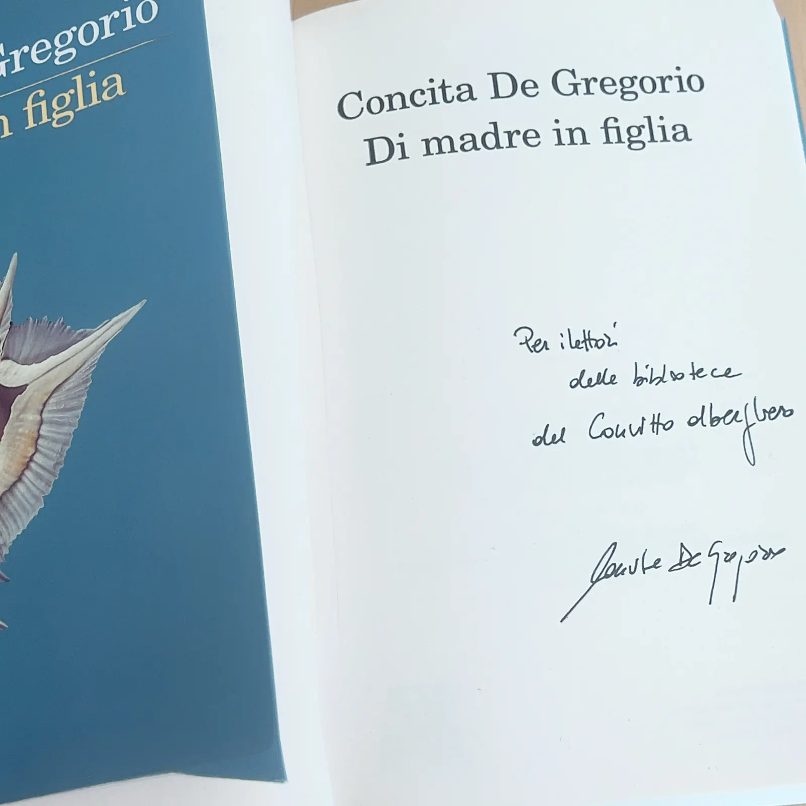
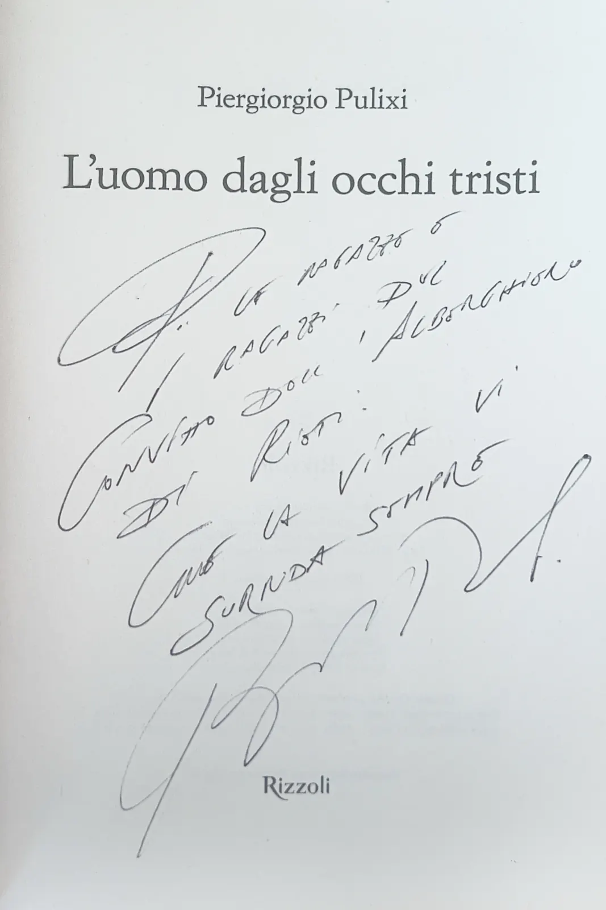

Leggere insieme,e andare oltre le pagine
Una biblioteca nel Convitto, curata con le ragazze e i ragazzi. E un anno di incontri con autori, poesia, teatro e arte nei luoghi di cultura di Rieti.
Biblioteca comunale Paroniana, Rieti
La nostra biblioteca
Al Convitto c'è una biblioteca sempre aperta ai convittori. Non è una stanza di libri da non toccare: le ragazze e i ragazzi partecipano alla sua cura, propongono titoli nuovi e la rinnovano anno dopo anno.
Un libro fa viaggiare senza muoversi, fa incontrare persone che non conosceremmo mai, allena il pensiero critico e l'empatia. E, a fine giornata, aiuta anche a staccare. Per questo la biblioteca è pensata come un luogo di incontro, di creatività e di confronto, in cui ognuno trova il proprio posto.
- Lettura e prestitoSi legge sul posto o si prende un libro in prestito.
- Letture condiviseUn libro letto insieme, e poi discusso.
- CaviardageSi cancellano parole da una pagina stampata finché ne resta una poesia.
- DebateConfronto con regole precise: due squadre, una tesi, argomenti a favore e contro.
- Giochi letterariSfide e giochi che partono dai libri.
- Incontri con autoriChi scrive i libri, dal vivo, a rispondere alle domande.
- Ricerche sul webImparare a cercare, scegliere le fonti e verificarle.
Dediche d'autore
Due libri dei nostri scaffali portano la dedica dei loro autori, scritta per chi legge al Convitto. Sono lì, a disposizione di tutti.

«Per i lettori della biblioteca del Convitto alberghiero»Concita De GregorioDi madre in figlia

«Alle ragazze e ai ragazzi del Convitto dell'Alberghiero di Rieti: che la vita vi sorrida sempre»Piergiorgio PulixiL'uomo dagli occhi tristi
Pagine perdute tornano a nuova vita
I libri rovinati o rimasti senza lettori non finiscono nel cestino. Piegati pagina dopo pagina diventano alberi di Natale, vasi, decorazioni per la biblioteca.
È un lavoro di pazienza e di mani, che insegna a guardare un libro anche come materia: carta, pieghe, luce.
Oltre le pagine
Ascoltare chi scrive, votare le poesie di un concorso, entrare nella sezione antica di una biblioteca o in un teatro dell'Ottocento. Durante l'anno il Progetto Lettura ha portato i convittori fuori dai libri, nei luoghi di cultura di Rieti.
Così la lettura smette di essere un compito: diventa una cosa viva, da discutere, che si lega alla storia e alla bellezza della città in cui si studia.
-
I.
«La mia casa di Montalbano»Incontro con Costanza DiQuattro
Chiesa di San Giorgio, RietiNel centenario della nascita di Andrea Camilleri, l'associazione culturale Polymnia ha invitato la scrittrice Costanza DiQuattro a presentare il suo libro autobiografico. È il racconto di un'infanzia nella casa di famiglia in Sicilia, diventata poi uno dei luoghi delle riprese del «Commissario Montalbano».
Per i ragazzi è stato un modo per guardare Camilleri da vicino, dove si incontrano la letteratura, la vita privata e la televisione che tutti conoscono.
-
II.
Il giro d'Italia delle poesie in cornicee visita alla Biblioteca Paroniana
Biblioteca comunale Paroniana, RietiIl gruppo del Progetto Lettura ha partecipato alla tappa reatina del concorso nazionale «Il giro d'Italia delle poesie in cornice 2025». Tra le oltre 45 poesie finaliste arrivate da tutta Italia, i ragazzi hanno letto e votato le loro preferite.
Poi la visita guidata alla biblioteca, settore per settore, fino alla sezione antica: volumi rari e secolari, codici miniati, carte geografiche di altri tempi.
-
III.
Premio letterario Città di RietiXIII edizione · i convittori in giuria
Biblioteca comunale Paroniana, RietiQuesta volta i giudici erano loro. Come membri della giuria popolare, i ragazzi hanno letto i cinque romanzi in gara, molto diversi per stile e per temi, ne hanno discusso e li hanno votati alla Biblioteca Paroniana.
Leggere per dare un giudizio è un'altra cosa: bisogna arrivare in fondo, confrontare, motivare una scelta.
Cinque romanzi,
una giuria di convittori Giuria popolare · XIII edizione -
IV.
«La partenza inaspettata» di SalieriIncontro con gli artisti e opera buffa
Teatro Flavio Vespasiano, RietiPrima l'incontro con gli artisti, che hanno raccontato come è nato lo spettacolo. Poi l'opera buffa di Antonio Salieri, portata in scena per il bicentenario della morte del compositore.
La regia moderna, con pareti a specchio e proiezioni in motion graphics, dialogava con i costumi del Settecento. I giovani artisti in scena hanno restituito all'opera la sua ironia, e i ragazzi l'hanno seguita con una curiosità sincera.
Un'esperienza che si lega ai laboratori del Convitto, quello teatrale, quello di lettura e il Laboratorio Musicale, e che il gruppo ricorda come una serata vissuta insieme.
-
V.
Miró. Il giardino delle meraviglieUn viaggio nel surrealismo
Palazzo Dosi, RietiUn gruppo di convittrici e convittori, con le loro educatrici, ha visitato la mostra dedicata a Joan Miró. Colori pieni, linee libere, segni che sembrano un alfabeto inventato: l'universo del maestro catalano ha catturato l'attenzione di tutti.
Anche un quadro si legge: un'occasione per scoprire che l'arte può essere un linguaggio universale di libertà e di espressione.
Ci vediamo il prossimo anno, con nuovi libri
Grazie alle famiglie dei convittori e a tutti coloro che hanno donato libri e hanno contribuito ad arricchire la nostra biblioteca. Gli scaffali continuano a crescere: ogni nuovo titolo è benvenuto.
Il Progetto Lettura e Biblioteca è curato dall'educatrice E. Giansanti, referente del progetto.